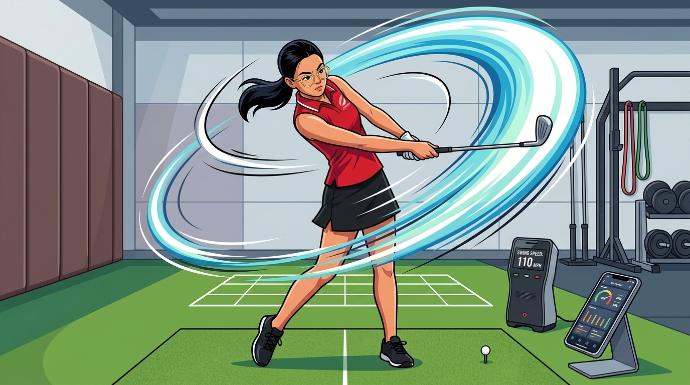
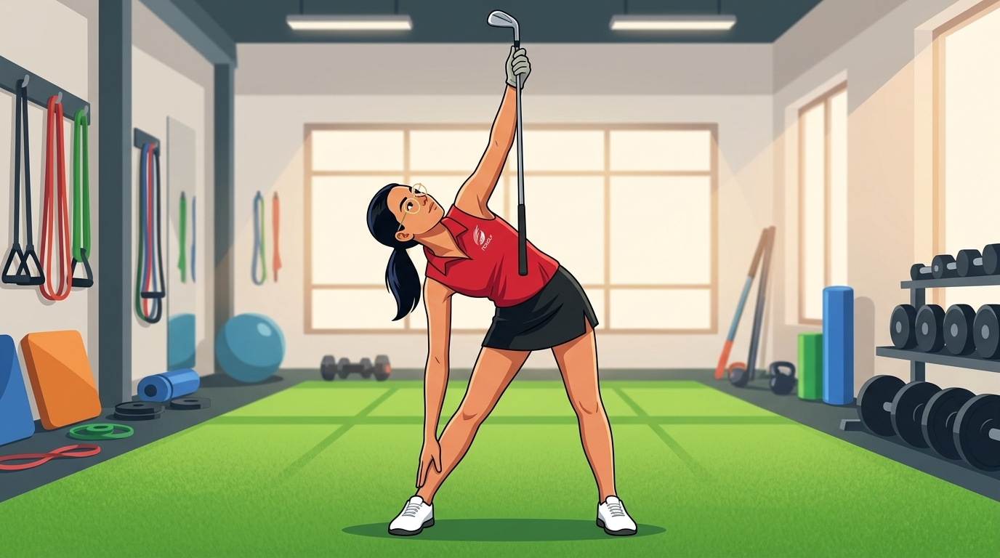
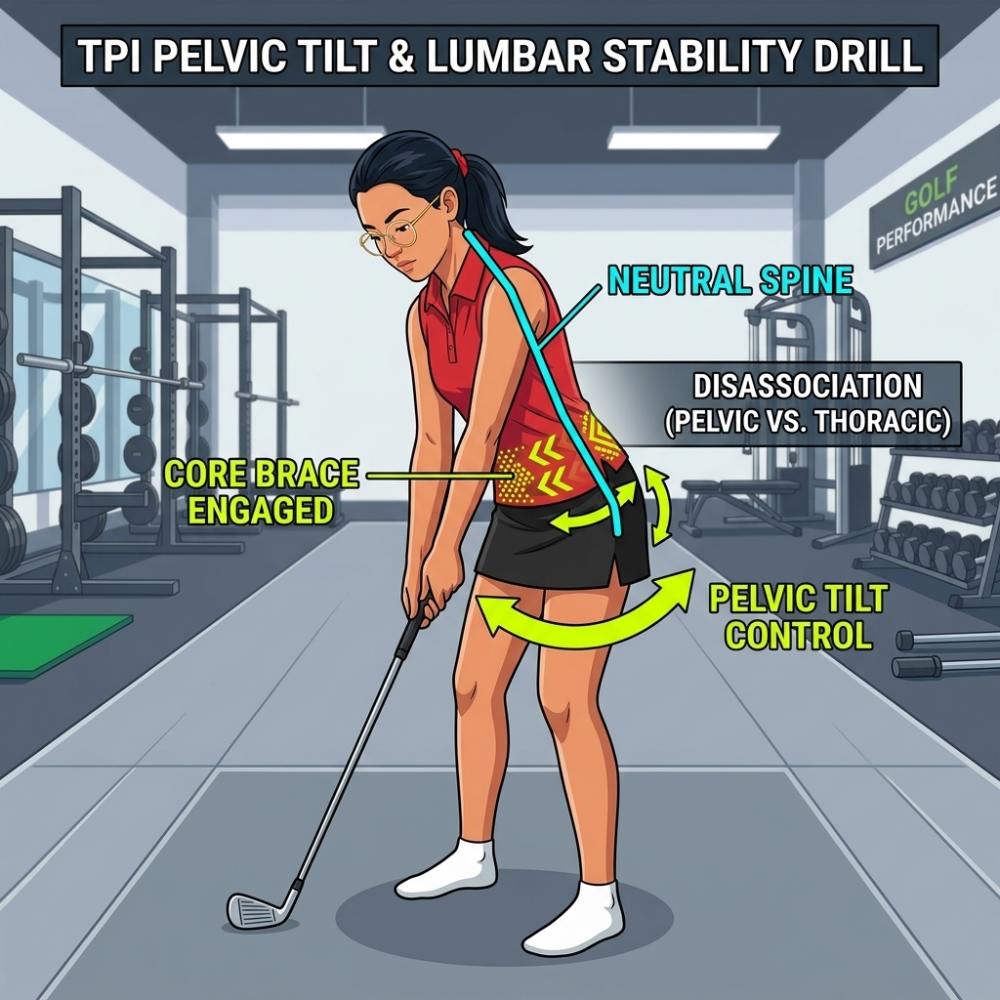

4 DIRECCIONES RADICALMENTE DISTINTAS
Una comparativa visual directa con 4 filosofías de diseño, arquitecturas y experiencias de uso sin plantillas genéricas.
Pantalla Completa / Swipe
Cero cajitas ni marcos. La ilustración de Nicole ocupa el 100% de la pantalla de borde a borde, con controles flotantes translúcidos y swipe vertical.

Overspeed Stick
Sonido de látigo máximo en el impacto reteniendo el retraso de muñecas.
Modo Caddy / Cancha
Para dejar el móvil en la bolsa a 2 metros. Tipografía industrial de alto contraste, números gigantescos estilo marcador de estadio y botones enormes.
MOLINO T-SPINE

Cuaderno Editorial
Cero estética de videojuego. Fondo claro crema de papel, verde pino de club de golf, tipografía clásica elegante y la sesión como un itinerario de torneo.
Disociación Pélvica & X-Factor

Bento Cockpit (Original)
La maqueta de referencia que aprobaste al inicio: consola táctil de simulador (Trackman) con avatar en caja Volt, reloj circular neón y cronómetro rojo.